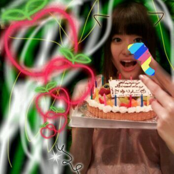

ろってぃーです♪
ちょっと遅く
なっちゃったけど,,,☆
さゆりん 二十歳のお誕生
おめでとう(⌒‐⌒)

かわいい〜(⌒‐⌒)
さゆりんの大好きな
林檎だよ♪
さゆりんに
新しいお耳様も
つけちゃった〃・ω・〃笑
でででっ*^ω^*
ついにっ)))!!!
...
渋谷PARCO劇場の公演が
始まりますっ(>ω<!)☆
やばいよー ><
緊張するよー><
楽しみだけど
不安な気持ちもすごく
あるよーう(・ω・〃)www
みんな助けてーー ( ・ _ \ 。)
でも 私っ♪
全力で頑張りますっ!!
ドーゾ
よろしくお願いいたします*・ω・*
皆様に 元気を与えれる様
公演の期間は
今日より明日... と
もっともっと上を目指して
頑張りたいと思います*^^*
ではっ,休憩時間はもう
終わりみたいだ♪
レッスン頑張りますっ!!
読んでくれて
サンキューです☆
のし(^-^)
ろってぃーより。